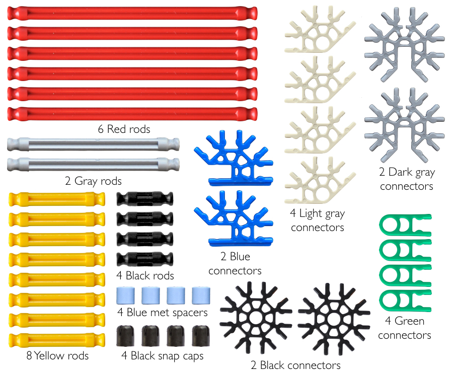

K'nex universal joint
This tutorial will show you how to make a universal joint (U-joint) using K'nex micro parts.
A U-joint allows rotation about two perpendicular (orthogonal) axes and is used in engineering to transmit rotations through a rod (e.g. axle) while allowing that rod that does not necessarily remain straight. U-joints are equivalent to saddle joints found in biological systems, even though the structure of these joints differs. For example, the joint between the base of the human thumb and the wrist is a saddle joint; this joint allows the thumb to rotate (i.e. circumduct) but not twist about its long axis.
The parts needed for this tutorial are:
These can be purchased online through the "Parts & Extras" page on the K'nex website. The connectors can be found here and the rods can be found here.
1. This U-joint has three rigid elements (bodies): two rods connected by a cross-shaped middle piece. Start by making the two rod elements. I've added a longer component using three red rods to make it easier to hold and manipulate the U-joint.
2. Next, make the cross piece.
3. Attach each of the rod elements to the cross piece by sliding the green connectors onto the yellow rods. You may have to detach the green connectors and then reattach them.
4. Lastly, slide the blue met spacers over each yellow rod end of the cross piece and then snap on the black caps.